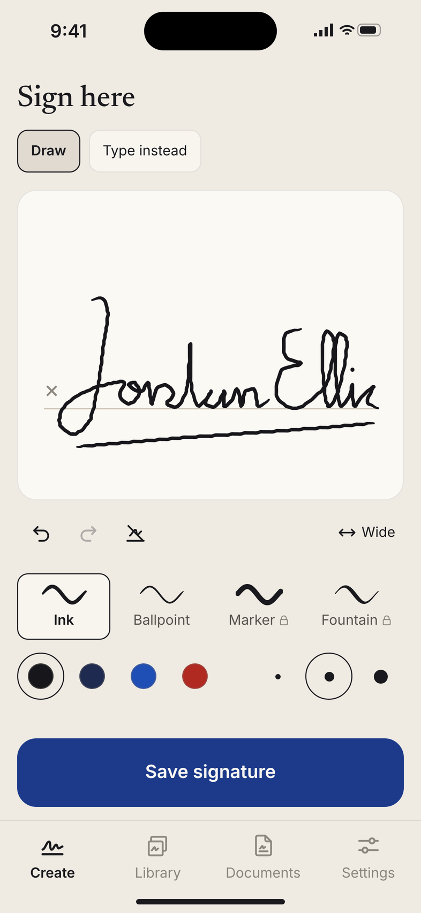
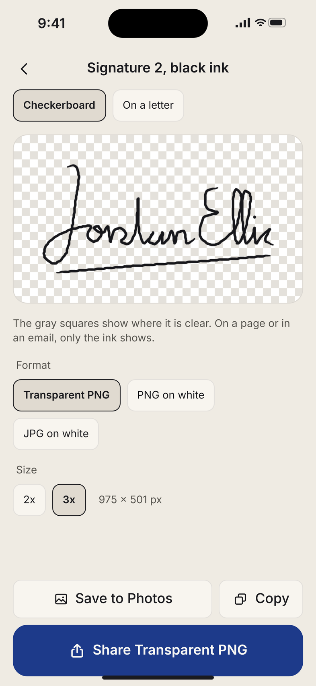
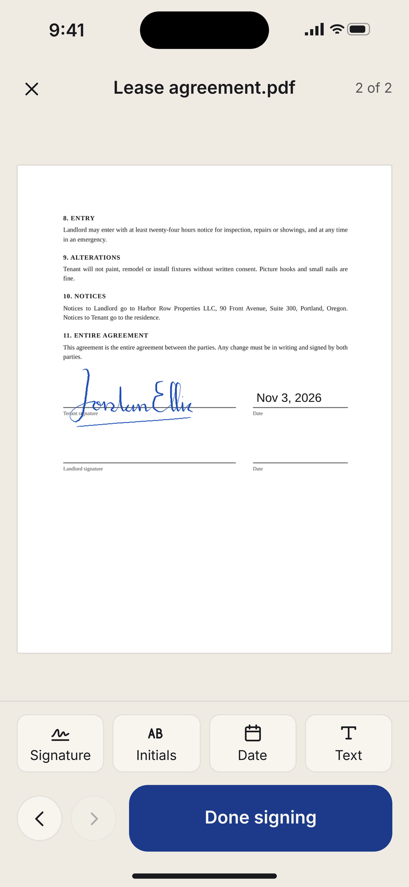

Signature Maker: an electronic signature maker that signs PDFs on iPhone
Draw or type a signature that looks like yours in under a minute, export it as a clean transparent PNG, and sign any PDF from Mail or Files. It works offline, and nothing leaves your phone.
Download on the App StoreFor iPhone. Making and saving signatures is free, and so are your first export and your first signed document.



Private by design
Everything stays on your iPhone. No account, no sign-in, no uploads, no cloud, and it works in airplane mode. Signed copies go only where you send them.
Signature Maker creates a signature image and places it on your document. It does not verify identity or certify signatures.
Questions
How do I make a transparent signature PNG?
Open the app and draw your signature on the paper, or tap Type instead and pick a script font. Tap Save signature. On the next screen Transparent PNG is already chosen, shown on a checkerboard so you can see where it is clear. Tap Share to send it to Mail, Messages or Files, or tap Save to Photos or Copy. The file is cropped to your ink with a small margin, at 2x or 3x, ready for an email footer, Word, Canva or a form.
How do I sign a PDF from Mail?
In Mail, tap the PDF attachment, tap Share and choose Signature Maker. The document opens with its pages. Tap Signature to place your saved signature, drag it onto the line, and pinch or pull its corner to size it. Tap Done signing. A new file named after the original with “signed” added is saved, and Send it back opens Mail or the share sheet. The original attachment is never changed. Files from the Files app work the same way, or open them from the Documents tab.
Is a signature made this way legally binding?
Signature Maker creates a signature image and places it on your document. It does not verify identity or certify signatures, and it keeps no audit trail. Whether a signature added this way is accepted depends on the document, the person asking for it and where you live. If a document needs an identity-verified electronic signature, ask the sender which service they require.
Is anything uploaded?
No. Your signatures and documents stay on your iPhone. There is no account, no sign-in, no analytics and no server, and the app works in airplane mode. Files go only where you send them. The privacy policy has the details.
What does Pro cost?
Making and saving signatures is free, always, and your first export and your first signed document are free too. Pro adds unlimited exports and signed documents with no corner mark, all four pens and all twelve script fonts, initials, and the date and text stamps. It is $4.99 a week with 3 days free for new subscribers, $19.99 a year, or $39.99 once for lifetime. Prices are in US dollars and can differ by country.